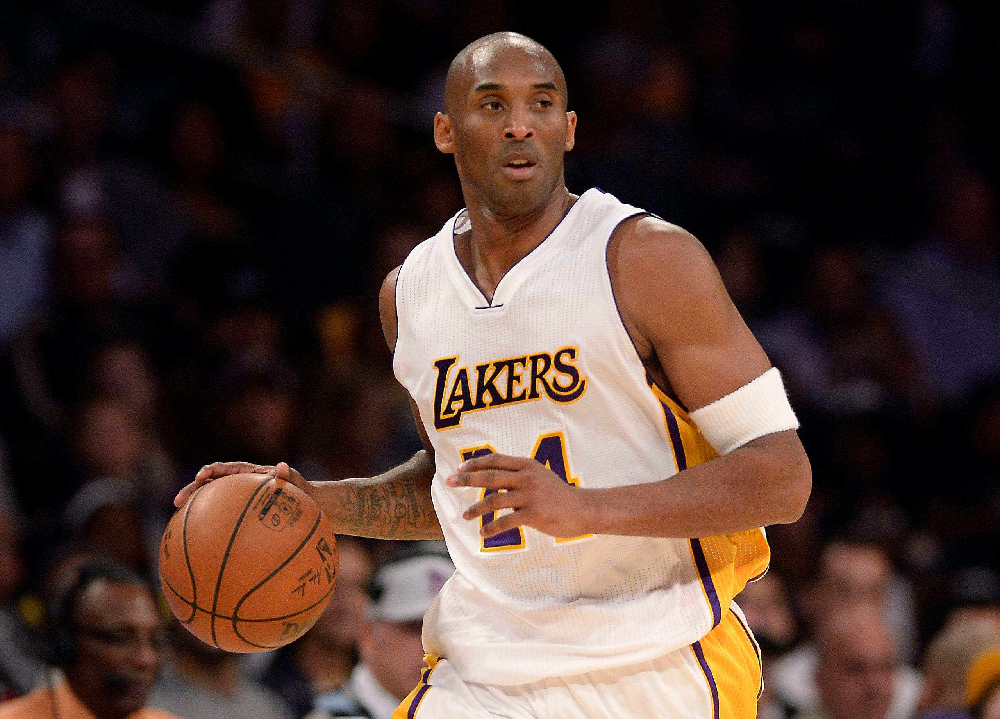

THE MAMBA
Kobe Bryant who died in Helicopter crash with several other passengers that included his daughter Giana was a basketball prodigy turned superstar. In a career that 20 years Kobe won it all. His life cut short at only 42 robbed the world of a generational talent. At the time of his death he was spending more time with his family and acting as mentor to many in the basketball world. Here we present a snapshot of his stellar career.
1978-1996
Born in 1978 in Philadelphia to Joe and Pam Bryant
At 6 years the family moved to Italy as Joe's basketball career took the family from the US
At 13 the family moved back to the USA with Kobe entering middle and later High school
A stellar high school basketabll career was followed by the NBA draft (1996) (drafted to Hornets and traded to Lakers)
NBA the early years 1996-2003
Bench player to starter in 2 seasons with improvements in points per game
Runner-up in the 6th man award
Youngest NBA all-star 98/99 and Lakers hire Phil Jackson as coach
3pt championships 2000-2003
All defence, all offense team selections

Mid career and stardom 2003-2010
early struggles but improvements in points per game
runner up in the 6th man award
multiple early exits from the playoff
multiple early exits from the playoff
multiple early exits from the playoff
The last dances and retirement 2010-2016
early struggles but improvements in points per game
runner up in the 6th man award
multiple early exits from the playoff
multiple early exits from the playoff
multiple early exits from the playoff